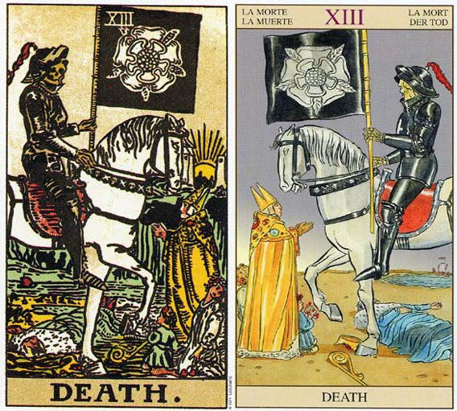

这是一篇关于塔罗死亡牌。死亡代表一切的终结，将会有新的来代替着你，生死是世间万物的轮回，无法逃避的。但是死或许有代表着一种新生。在塔罗牌中，如果你抽到塔罗死神牌，那门塔罗死亡牌有代表着什么呢？对你的生活有什么启示呢？对未来有什么预示作用呢？且看以下内容，将会得到解答。塔罗牌死神资料
相关语：结束
对应星象：冥王星
每月13日-死神 塔罗牌大阿卡那中最容易被误解的是第13张牌，也就是“死神”。
含义：转变、更新。
优点：起死回生、摆脱低迷状态、挽回名誉、身体康复、挽回恋情。
缺点：失败、接近毁灭、生病、失业、维持停滞状态、持续的损害、交易停止、枯燥的生活、别离、恋情终止。
死神（Death）代表改变，死神牌意味某种状况的结束。某个阶段的结束，去试试接纳它，迎接新的阶段来临。 逆位的代表恐惧改变，也可能抗阻着它。
牌面故事
传统的死神牌，通常是由骷髅人拿着镰刀来代表，而韦特将死神的意象提升到更深一层的境界。最显眼的就是那位骑着白马的骷髅骑士。他身边有四个人，国王、主教、女人、小孩，象征无论是世俗或出世、男或女、老或少，都逃不过死亡这个自然现象。国王抗拒死亡，被骷髅骑士践踏过去。主教的令牌掉在地上，双手合十崇敬死亡。女人跪下，别过脸不忍看。小孩不懂死亡，好奇的望着骷髅骑士。跪着的女人可能是力量牌中的那位女性，他们的衣着与头冠都极为相似。再回到骷髅骑士，他头上那根红羽毛和愚人所戴的是同一根，他的旗帜是黑色背景，象征光芒的不纯，上面五瓣蔷薇的图案是蔷薇十字会的图腾，关于此图腾的说法众多，可能是代表随着死亡而来的新生，另一说是象征火星与生命力，还有一说是象征美丽纯洁与不朽。远方的河流就是流经伊甸园的四条河流之一，称为Styx，象征川流不息的生命循环，似乎在告诉我们死亡并不是一切的终点。
牌义解释
韦特牌的死神充满各种象征，无论如何，最主要的牌义就是结束。结束可以有很多种形式，可以是某种生涯的结束，例如毕业、搬家、转职、结婚、同居，可以是关系的结束，例如分手、离婚、拆伙，可以是习惯的结束，例如戒烟、戒酒、戒赌、戒色，但肉体死亡的含义在预测上则非常罕见。
从另一方面来看，结束其实也只是一种转变。世界上唯一不变的就是改变，所不同的只是改变的快或慢而已。慢慢的改变，人不会有什么感觉，但突然间的改变，却使人难以接受。结束就是最突然的改变，突然之间，必须迫使你立刻放弃某种事物，无论你愿不愿意。如此转变令人难以承受，对未知的恐惧在所难免，但这个课题每个人都必须要学。
死神骑着一匹白马，白色是最纯净的颜色。的确，死亡就像一个橡皮擦，把过往的所有事物都擦掉了，使一切都重生，一切都如白纸般重新来过。所谓“上帝在你眼前关上一扇门，必定为你打开另一扇窗”，死神就是这么一种新生，古谚云：置之死地而后生，又云：不经一番寒彻骨，焉得梅花扑鼻香。可见古人早已深明此理。死神对于戒绝过去的恶习，是张非常完美的牌。如果过去曾经有不堪回首的往事，死神能让你重新来过。尽管难受，世间万物没有恒久不变的道理。死神指出过往某种事物的结束，而我们的课题就是要承认、接受、在新生崖中找到新的快乐 ，也许你会发觉结束的事物原来没有自己想象得那么好，进而庆幸自己的崭新生活。
塔罗牌死神（Death）牌面解释
解读一
人的力量消失，只剩神的力量。 玫瑰代表生，旗上是倒玫瑰，代表死亡。有些是以百合表示。百合为丧花。 象征变革及转变，有死后复生的意义。
解读二
生命的景象正改变着。 一匹行动缓慢的马正在前进，一个骷髅人拿着旗帜， 旗帜上有神秘的玫瑰，象征着生命。远方的太阳代表永生。 国王被踩死在马蹄下，挡住马的是一个主教。
解读三
黑色代表死亡，高塔代表生与死。无生命的骨骼，代表结束、破坏。 黑玫瑰象征生命力和创造力。 13代表不吉利，但以算命者角度来看，代表变革的意义。 舍弃老旧的东西，彻底改造自我，才是此牌的真正义。
这是大阿卡纳中最容易被误解的牌。数字十三一向被视为与死亡有关——正如塔罗牌的情形一样。死神骑在白马上穿着铠甲，显示着他不可抵挡的力量。已经有人已经倒下了，有人接受这残 酷的现实，有人试图回避，也有人在做着无谓的反抗。
根据古历法第十三个月份是死亡及重生的月份，所以你不必去从牌面理解，而是要从积极的意味上去解释。接受眼前的事实，放弃一些到手的利益，你还可以得到更优厚的回报，正所谓“置之死地而后生”，经过磨难成功将更伟大。
真正的光明、慈悲与爱，来自于内在的觉醒，这是死亡赐予人最大的礼物。若非大胆施舍自己的命运，便没有机会品尝并穿透人性的底层，而破除哀伤的诅咒。不愿意进入哀伤的空间，真切地接纳生命另一面真相，等于放弃灵魂的再生机会。
我自己则对这张牌面非常有感觉，在摆出自己的生日塔罗牌阵中，有了恍然大悟的结论。展开塔罗命盘，顿时吓一大跳，却又如此熟悉。我被左右各一张死亡牌夹杀，而从小到大不断地接触死亡，亲友相继过世，竟然与我的出生有着若有似无的神秘关系，而梦境中，也经常接触许多的尸体；这并没有具体地对我的生活造成多重大的负面影响，却让我有瞬间被迫顿悟之感。藏传佛教让人去坟场修心养性，也许，还真是个道理。
与属水的天蝎座Scorpio的结合，似乎打开了生命的奇妙精髓，而赋予人自我探索的勇气。不可避免的改变，革命性的变化关系，都是天蝎座的特质。死亡蕴含着改变、过渡与再生的重要启示，是生命无可取代的凛然面貌，呈现出既定的生死循环，提醒肉体终将腐朽的真象。死亡是黑暗地母的宇宙本质，毫无怜惜地吞噬着自己的孩子。
死亡非常吊诡而讥讽地，极具悖论的代表性，确认了再生与灵魂的永恒。
为天蝎座牵制的死亡，是性欲激情的掌控者。执着于肉体不朽的人，很难接受黑暗的覆盖。死亡似乎仅只存在于嘴边的装饰性语言，但经验自己的死亡，却是接近真我的唯一途径，虽过程痛苦、孤寂而吓人，却能激发勇气与灵性能量。无论意愿如何，都跟倒吊人有非常紧密的关系，完成自我牺牲的课题，是碰触死亡的关键密码；一但进入深层的死亡幽谷，却反而能找到真切而亲密的慰藉。
若想掌握自己的灵魂，必须面对内在的恐惧，从中开启自我面对的窗口。这张牌，恰恰是时间点，让自己看见内在的黑暗，而找到与光明相处的契机。正面的死亡牌，验证了潜意识的奥秘，即将往再生之路启程。若拿到负面牌，则表示逃避只有增加恐惧，这不过是一场梦魇罢了。
真正的光明、慈悲与爱，来自于内在的觉醒，这是死亡赐予人最大的礼物。若非大胆施舍自己的命运，便没有机会品尝并穿透人性的底层，而破除哀伤的诅咒。不愿意进入哀伤的空间，真切地接纳生命另一面真相，等于放弃灵魂的再生机会。也许眼前的痛苦、艰困、忿怒、悲伤与折磨，将自己埋进黑暗的深渊而伸手不见五指，似乎不见天日。却浑然不觉，光明就在不远处，闪烁着喜悦的再生微光，日与夜，只有一线之隔。唯有亲自品尝过黑暗的人，才能精确地描述黎明的幸福，自己的双手，正是开启光明的契机。
塔罗牌死神的正位解释
1.失败、接近毁灭、生病、失业、维持停滞状态、持续的损害、交易停止、枯燥的生活、别离、重新开始、双方有很深的鸿沟、恋情终止
2.当牌面正立时，事业上你将放弃一些得到的利益，并获得全新的发展机会。在感情上，你将会发生深刻的变化，将开始新的阶段，接受事实你们会有更加美好的旅程。
3.*事情的终了；激烈的变化；残局；与过去告别；绝交或败北；惯用的思考方式不合时宜了；暂时的别离；全新的出发。
4.*失恋；因转学或换工作而分离；因争吵而分手；没有未来的恋情；解除婚约；抛弃情人；毫无进展的状况。
5.*考试失败；不求上进；退学；辞职；失去目标；放弃计划。
6.*对损失视而不见；灾难；火灾；重病；事故。
塔罗牌死神的逆位解释
1.抱有一线希望、起死回生、回心转意、摆脱低迷状态、挽回名誉、身体康复、突然改变计划、逃避现实、斩断情丝、与旧情人相逢
2.当牌面倒立时，事业上你在试图“两全其美”，希望能够发生奇迹。在感情上，对方已经接受了改变，而你却在逃避现实，你俩的距离正在越来越大。
3.*新的开始；重新再来；挣脱困境；恢复勇气；焕然一新；改变想法；重生。
4.*爱情复活；从失恋的痛苦中解脱；结束毫无进展的恋情；结束不好的恋爱；从最糟糕的状态中挣脱出来；生产。
5.*下定决心改变方针；落榜；重头再来；重新用功。
6.*获得新收入；意想不到的收入；有人还钱；疾病痊愈。
7.恋爱 旧爱重燃
8.工作 改革、起死回生
9.健康 治疗成功
10.娱乐 宜旅行转变心情
11.其它 奇迹地恢复
12.结论 抛弃过去，重新开始
大体上的意义
死亡为旧事物画上休止符，并让路给新事物。死亡牌代表改变的一段其间。我们可以这样说，生命中的某个章节就要结束了，而你对这份改变的接纳，将是变化自然而然地发生。
抱持着“生命将会带来某些比它从你身上拿走的更美好的东西”的信念。在潜意识中，你或许也在渴望改变的发生，死亡牌即意味着改变正要出现。不要抗拒这份改变，试着去接纳它吧。
倒立的死神
当死亡牌倒立时，有可能是指对任何死亡的形式极端恐惧。一点儿小改变都可能被误以为是肉体的死亡，而你会尽所有可能去抵抗它，因为你不愿意死亡。这份恐惧可能会让你沉溺于旧习，带给你一种单调、重复的生活，用这种生活来掩饰你想到即将面临改变时所产生的绝望。
当你不想改变时，你必须消耗所有力量以保持静止不动，且为了有某些力量可以生活，你常常会从周遭的人身上压榨能量。以目前而言，死亡是必须的，然而你对改变的恐惧令你陷于苦闷、沮丧或肉体的疲惫中，因为你大多数的精力都用在抗拒改变。
这张倒立牌意味着缺乏“生命将带来更美好事物”的信念。有些人寻寻觅觅于未来幸福的保证。如果你抗拒这些改变的话，它们会从另一个方向来接近你，比如，从内心，梦中及情绪中，或甚至是身体上的症状来向你反映，譬如肌肉紧张或头痛等。
两性关系上的意义
死亡牌象征一个两性关系即将发生深刻的改变，或是你对两性关系的态度即将发生深刻的改变。它可能是一段关系的结束，譬如某种分别，或关系中某个阶段的结束，譬如宝宝的诞生。
炼金术塔罗牌：死神
在炼金术过程中，死神代表着净化过程（Putrefaction），这种过程与现代化学中没有相似之处。因为对炼金术士来说，他们认为自己从事的化学过程是有生命的，所以他们所谓的净化便是将其杀死，而对我们现代人来说，这些都是无稽之谈，所以也无从谈起杀与不杀。
在净化过程里，炼金术士会将材料再度溶解，有一个方法便是将其磨碎或压碎，然后再将其弄湿，最后放入湿炉。这样，原本的精髓就会从原先的构成重分离。从字面上看，就是物质的腐烂和发臭。
炼金术的过程，就是使炼金物质死亡，然后再获得重生。这种死亡的图像可以在许多炼金术文字作品中发现。这些图像大多受影响于1622年的《哲学改革》（Philosophia Reformata），这里，死亡被形象化成一个骷髅，站在一个已被烧的发黑的炼金术容器上，骷髅手中的黑乌鸦同样也象征着黑化过程。在凯尔特神话中，掌管死亡的女人摩格纳也有一只类似的黑乌鸦伴随。在炼金术塔罗牌里的死神它手持一支箭，箭是中世纪象征死亡的符号，这里取代了传统塔罗牌死神里的镰刀。
塔罗牌死神（伟特塔罗篇）
死神牌对应占星中的天蝎座，而天蝎座也恰好与死亡与重生相关，所以两者的对应还是比较适合的。在伟特塔罗的死神牌里，我们看到了一具身着黑色盔甲、骑于马上的骷髅缓缓前行。在死神的马蹄下，国王、主教、女人、孩子皆不能豁免。但是值得注意的是，死神手持的旗帜上画着的是白色玫瑰，白玫瑰在金色曙光组织里是象征重生的符号。在牌面中的远处，有一只小船，这只船代表的就是死后的旅程，小船所驶进的方向是双塔之间旭日东升的太阳，新的破晓。这里的双塔和双柱的意义类同，这是一对象征“入口”的双塔，就像是一个“匝道”，在双塔的这边是死亡（结束），而另一端则是散发着光芒万丈代表新生与永恒的太阳。死神牌所描述的状态这是吊人之后的状态。死亡并不是仅仅是终结，同时也是一个新生。这张牌说的意思是：旧的过去、一个阶段的结束、某个情形、状态的自然终结，但同时亦代表了新生、新的机会。所有的事物都有会有终结的时候，但是循环的原理也告诉我们，结束之时也是更新之时。
塔罗牌死神（古塔罗篇）
1.塔罗中死神牌的数字为13，数字13被广泛的用于代表死亡和灾难。世界上有很多酒店是根本不设13楼的，因为这个世界上对13有成见的人还是很多的（就连骂人也要带上13这个字眼）。从塔罗牌历史来看，貌似所有塔罗的大牌中，编号13总是代表死亡。但是我们需要记住，死神牌并不总意味着肉体的死亡，更确切的来说是一个改变，所谓改变就是新旧交替，这么说来我们无时无刻不在死亡，因为每过1秒哪怕是0.1秒，我们都是有改变的。所以死神牌更多的是强调了神秘主义理念中的死亡，也就是转变与提升，每一次死亡都是一次向上提升的台阶，使人越来越接近神秘主义的目标。
2.在马赛塔罗的命运之轮牌图里，原本轮子底下的人物没有被画上，但是生命的终结与命运的完结这一点含义仍旧有所体现。所以，吊人之后出现的牌正是死亡。对于神秘主义者来讲，他们最根本的目标便是寻求永生与不朽。所以，也许他们会相当欢迎这一张死亡牌的到来，因为这离他们的目标不远了。
3.通常，塔罗中用来代表死亡的形象是一个骷髅，也就是被人们称为“死神”的形象。在早期的塔罗牌里，画的是死神骑于他的马上，手中提着镰刀（不过维斯康提－斯佛扎塔罗中的死神手中所持的确实弓箭）。
4.说到死神图像的来源，可以追溯到法国十三世纪中期广受流行的作品“死亡之舞”。这里的死神胜于任何时代与任何阶级的人物。www.yw11.com与该艺术作品相似的是，马赛塔罗中的死神图中在死神面前的各种人物的头颅断肢。下图呈现的是艺术作品The Dance of Death的部分截图，该艺术作品是由德国艺术家Hans Holbein（14497－1543）于1538年的作品，该图中呈现了是死神手抓一名隐士，说明死神要比隐士“厉害”，而根据塔罗牌“以后为大”的顺序规则来看，死神也是位于隐士之后。
5.正如我们之前解说10号牌命运之轮时提到，那些追逐世俗名利的愚蠢之人，这些人终将也逃不过苦难与死亡。如果上述观念只是一种悲观的厌世观念，那么死神绝对应该在地位最高的最后一个位置。但事实证明了死神位列13，而且历史上几乎所有有编号的塔罗牌中的死神编号都是13，虽然数字13是厄运与死亡的象征，但是正如我们开头说的，这张牌更重要的是表达死亡并不是整个塔罗故事的终点，它甚至还不是大牌第二组的最后一张，所以这里说的是一种神秘主义的目标，英雄们对于永恒不朽的追求与超然。
网友问答:
问题一:最近新买的塔罗牌，死神如图，求问这是哪一种类型的塔罗，一定会采纳的，拜托了！ 网友解答:你好，是罗宾伍德塔罗牌（我到协会问的）
The Robin Wood Tarot
出版商：美国Llewellyn（月亮）公司出版，原装进口（你的是中文的估计就是国产/国翻）
作者：Robin Wood
规格：70*120mm
张数：78张
进口的罗宾伍德塔罗牌价格为150左右。
这款牌参照伟特塔罗牌涵义绘制，在西方是一款极受好评的塔罗牌。整个牌面特别醒目、炫丽、细致，人物非常逼真，使用时只需看到生动的牌面便可以读出牌上所传达的涵义。这副牌很适合初学者上手，而且它的牌面加入了更深一步的象征符号，有利于解读和练习时增强联想力，对紧接者的要求也能满足。
问题二:塔罗牌占卜，死神正位星币四正位圣杯三正位是什么意思呢？
网友解答:死神正位 ：重生，重头开始星币四正位：巩固，思考，不愿放手，守护圣杯三正位：庆贺，重聚，进步，交流不同的问题和不同的牌阵下有不同的解释。
问题三:塔罗问感情。。。逆位节制，正位正义，正位死神，求大神指点！
网友解答:死神也不代表你们一定会分手。 死神是大阿卡纳中最容易被误解的牌。数字十三一向被视为与死亡有关——正如塔罗牌的情形一样。死神骑在白马上穿着铠甲，显示着他不可抵挡的力量。有人已经倒下了，有人接受这残酷的现实，有人试图回避，也有人在做着无谓的反抗。 根据古历法第十三个月份是死亡及重生的月份，所以你不必去从牌面理解，而是要从积极的意味上去解释。接受眼前的事实，放弃一些到手的利益，你还可以得到更优厚的回报，正所谓“置之死地而后生”，经过磨难成功将更伟大。
问题四:灵魂摆渡三张塔罗牌除了背叛者 牺牲者还有一张是什么牌啊?
网友解答:是吊人，愚人，和塔啊亲
问题五:塔罗牌过去死神。正位。现在皇后正位。未来战神逆位。想咨询感情。
网友解答:我只是个塔罗牌初学占卜者，希望答案能帮助到你
过去你可能曾经有过失恋，或者因环境改变而分离，抛弃情人。或许你想过向过去告别，但是还是因为害怕改变而沉溺于痛苦之中。
现在可能你得到了新的快乐的恋情，得到了安全感，完成了某些目标。过的比较滋润富足。比过去更加成熟了。
未来或许你会因为对恋人的期望过高而导致失望，可能会因为有情敌的干扰而失败，可能会因为有过度保守的人觉得你们的恋情不合适而阻挠。恋情可能会被破坏。过于情绪化。
或许你应该对恋人的要求稍微低一点，不要太过于激动或冲动而伤害了你们之间的感情，应该完善自己的性格缺陷，不要局限于一些过于传统的规矩上而破坏了这段感情。
我也不知道你现在是不是有恋人，但是感觉你这么问大概也已经脱离了单身汪的行列了=L祝幸福
问题六:塔罗牌牌阵爱情幸福，1现在、星正位，2对方、恋人正位，3现在、死神正位，4在外影响、女皇逆位，5、女祭司正位。分别代表什么？求解释？
网友解答:1张星星，代表重获希望，说明现在的你对未来与他/她充满信心
2张恋人，代表渴望，爱恋，激情，订婚
3张死神，代表改变，转化，改变地位身份，有可能表示在这段时间你的生命中将会发生重大改变
4张女皇，有提示你要拥有耐心，爱，用感性去体验事物
5张女祭师，代表你们的未来是神秘的，有可能会如石榴，乃死亡之果，也有可能如新月与满月变替辉映合二为一